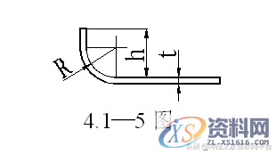
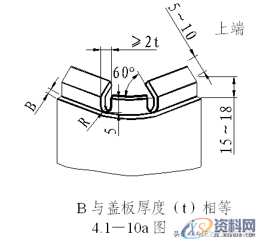

配图

图源：B 站专栏 cv10590863（潇洒教育，图带「资料网」水印）；4.1-3 表 最小弯曲半径（铝合金板一栏数值被水印遮挡，无法核实）

图源：同上；4.1-5 图 弯曲直边高度 h、半径 R、板厚 t

图源：同上；4.1-10a 图 室外机侧板上端圆角处的预留切口（图注 ≥ 2t、60°，B 与盖板厚度 t 相等）
图片版权归原作者所有，仅作个人学习收藏；出处见文末「来源与核实记录」。
结构原理
本节数字只写来源里给出的；来源没有就写「来源未给出」。
堆叠方案
方向：沿折弯截面，从内圆角到直边（单件钣金的几何关系）
| 层级 | 特征 | 材料 | 尺寸规则 | 作用 | 依据 |
|---|---|---|---|---|---|
| G1 | 弯曲内半径 R | 板材 | 冷轧/电镀锌/镀锌板 R ≥ 2t；黄铜板 R ≥ 1t；铝合金板见原表 | 防外表面开裂，又不因 R 过大而回弹失准 | 第 1 条、4.1-3 表 |
| G2 | 弯曲直边高度 h | — | h ≥ R + 2t | 保证足够弯矩，形状准确 | 第 2 条 |
| G3 | 弯曲边上的孔 | — | 孔边到弯曲半径 R 中心距离 L ≥ 2t；另一处写孔边距（至底根部）A ≥ 4 | 防止孔变形 | 第 3、14 条 |
| G4 | 侧面（梯形）弯曲的预留切槽 | — | 槽宽 K ≥ 2t，槽深 L ≥ t + R + K/2，或根部改阶梯形 | 防裂纹或畸形 | 第 6 条 |
剖面示意：
flowchart LR T["板厚 t"] --> R["内半径 R（冷轧≥2t，黄铜≥1t）"] R --> H["直边高 h ≥ R+2t"] R --> L["孔边距 L ≥ 2t"] R --> K["侧弯切槽 K≥2t，深≥t+R+K/2"]
零件清单
| 特征 | 数量 | 功能 | 材料 | 依据 |
|---|---|---|---|---|
| 工艺定位孔 | 按需 | U 形件两边不等长时防偏移；防一边向内收缩 | 同板材 | 第 5、11 条 |
| 预留切口/切槽 | 按需 | 防角部挤料起皱、直角两侧褶皱、回弹、冲孔后折弯开裂 | 同板材 | 第 6–10 条 |
| 让开阶梯线的弯曲线或切口 | 按需 | 凸部弯曲防根部开裂 | 同板材 | 第 13 条 |
装配顺序
单件成形，无装配；加工顺序上，来源提到冲孔后再折弯时要预留防裂切口（第 10 条）。
受力与运动分析
- 受力路径：折弯时外层受拉、内层受压；R 过小外表面开裂，R 过大回弹大（第 1 条）。
- 运动关系：U 形件两边不等长时，折弯时会向一边移位（第 5 条）。
- 失效风险：外侧裂纹、孔变形、残余圆弧（a < R 时，第 4 条）、角部起皱、单边收缩。补充来源指出：硬铝等脆性材料或硬态板材折弯易外圆角开裂；提高刚度不能靠换高强度同类材料，要改形状或换弹性模量更高的材料。
设计要点与参数
| 要点 | 内容 | 依据 |
|---|---|---|
| 最小弯曲半径 | 冷轧板、电镀锌板、镀锌板 R ≥ 2t；黄铜板 R ≥ 1t；铝合金板数值被水印遮挡 | 4.1-3 表 |
| 直边高度 | h ≥ R + 2t | 第 2 条 |
| 孔到弯曲中心 | L ≥ 2t | 第 3 条 |
| 残余圆弧 | a ≥ R | 第 4 条 |
| U 形件 | 两边最好等长，否则加工艺定位孔 | 第 5 条 |
| 侧弯切槽 | K ≥ 2t，L ≥ t + R + K/2 | 第 6 条 |
| 孔边距（至底根部） | A ≥ 4（单位按原文，未写明） | 第 14 条 |
| 选材原则（补充） | 减少材料品种和板厚规格；需折弯的件要求足够塑性、较低屈服极限；硬铝 2A06 不能折弯 | 补充来源 1.1.1、1.1.2.2、1.1.3.2 |
| 最小翻边、K 因子、展开计算 | 来源未给出 | — |
优缺点
优点
- 规则全部以板厚 t 的倍数给出，可直接写进设计检查表
- 每条规则都对应一种具体缺陷，便于排查
缺点 / 代价
- 文章为规则汇编，未给出实测或出处；图片疑为转载
- 铝合金等材料数据不完整（被水印遮挡）
可借鉴点
- 钣金检查清单：R、h ≥ R + 2t、孔距 ≥ 2t、a ≥ R、侧弯切槽、U 形件对称
- 角部、凸部、冲孔后折弯处默认加工艺切口
- 硬态/脆性材料要放大弯曲半径或换状态，不要硬折
相关案例
来源与核实记录
- 主来源：钣金折弯件的结构设计原则（B 站专栏，2021-04-02，潇洒教育）
- 补充来源：钣金结构设计工艺手册1.1（B 站专栏，2022-05-26，可口可乐要加冰ice）
- 核实：2026-11-13 打开两篇专栏原文核对 14 条规则与 4.1-3 表；表中铝合金一栏被图片水印遮挡，未录入数值。